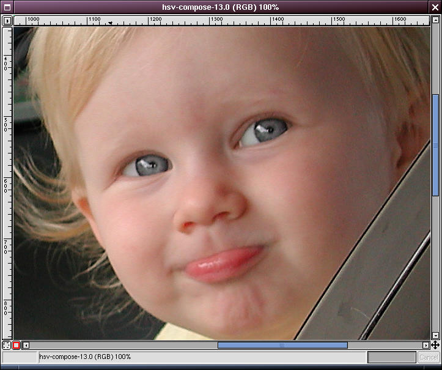
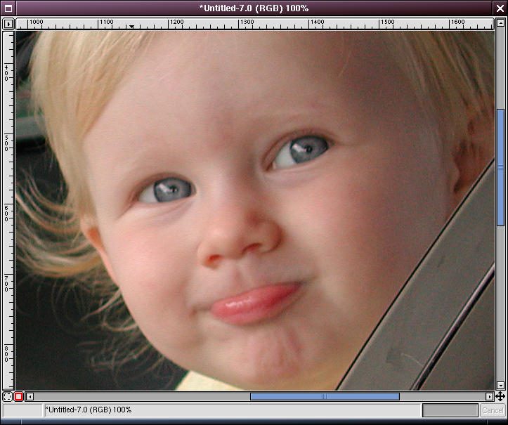

Text and images Copyright (C) 2002 Eric R. Jeschke and may not be used without permission of the author.
Maybe you think the smart sharpening method is too complicated, or too lengthy, or just not worth it for the benefit. There are many variations on this technique, some of which are not as lengthy as the "full" technique, but may still produce better results than a straightforward unsharp mask operation.
Compare for yourself!
Here are the results for the combinations listed above. Look for the sharpness in the eye lines, and CCD noise in the shadows of the face and in the door frame of the car.
1. Sharpening mask (edges only), luminosity channel only (LAB decompose/compose).
(Radius=1, Amount=2.0, Threshold=0)

2. Sharpening mask (edges only), value channel only (HSV decompose/compose).
(Radius=1, Amount=2.0, Threshold=0)
3. Sharpening mask (edges only), all RGB channels (no decompose/compose). First of the "shortcuts".
(Radius=1, Amount=2.0, Threshold=0)
This does nearly as good a job as the "full" smart sharpening technique. If your image is not particularly noisy, this is the way to go.

4. Sharpening mask (edges only), red channel only (no decompose/compose).
(Radius=1, Amount=2.0, Threshold=0)
At first you'd think that this would produce a better result than #3. It's very good as far as not enhancing noise, but it's clearly not as sharp.

5. No sharpening mask (entire image), red channel only (no decompose/compose).
(Radius=1, Amount=1.0, Threshold=0)
This one is a toss-up with shortcut #6. There is more noise than in shortcuts #3 and #4, but less than in #6. It's also less sharp than #6.

6. No sharpening mask (entire image), luminosity channel only (LAB decompose/compose).
(Radius=1, Amount=1.0, Threshold=0)
Sharper than #5, but with more visible noise. Noise is barely, perceptibly less than in #7 & #8.

7. No sharpening mask (entire image), value channel only (HSV decompose/compose).
(Radius=1, Amount=1.0, Threshold=0)
Hardly seems worth the decompose/compose steps, noise is as bad as in #8.

8. No sharpening mask (entire image), all RGB channels (no decompose/compose).
(Radius=1, Amount=1.0, Threshold=0)
This is a regular unsharp mask operation.
9. Unsharpened original.
You may also be interested in another shortcut technique: the "warp sharp" script.
The original tutorial (possibly with updated information) may be found here.